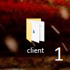
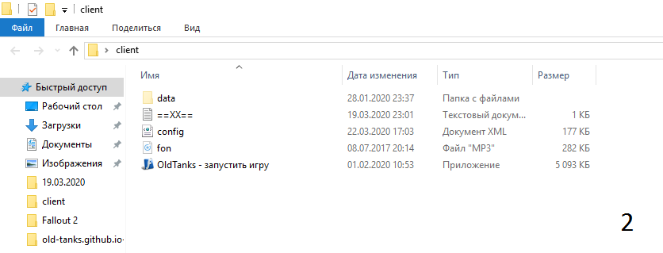
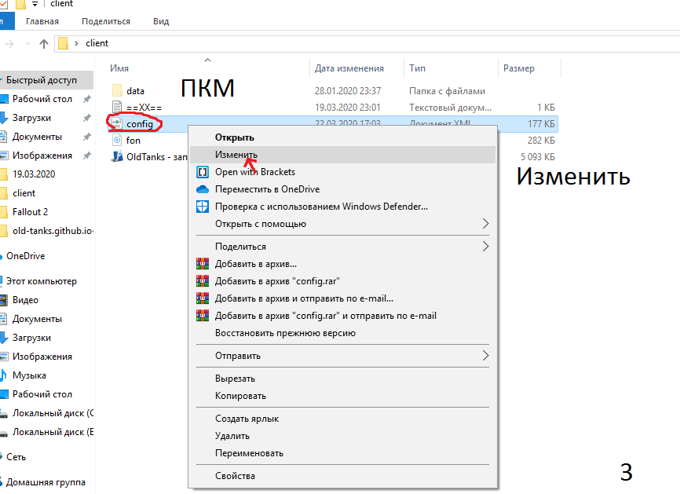
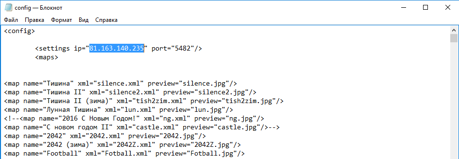

Паки ресурсов для игры.
*Первоначальная настройка параметров клиента для подключения к серверу.
В данной статье речь пойдет о настройке игры. После того как вы скачали клиент с официального сайта вам следует настроить игру.
Первым делом распакуйте игру куда вам угодно, главное запомните куда распаковали. Затем откройте папку с игрой и в ней найдите файл config.xml.
 Нажмите правой кнопкой мыши на этом файле и выберите пункт "ИЗМЕНИТЬ"
После того как вы нажали кнопку ИЗМЕНИТЬ у вас откроется окно текстового редактора в котором вам нужно найти вот такую вот строку:
И заменить выделенные цифры на эти: . Затем нажмите клавиши Ctrs+S или просто Сохранить. Всё! Настройка завершена! Можно подключаться к серверу!
__________________________
*Данная статья будет действительна только до тех пор пока игра не будет запущена на хостинге и сервер не получит постоянный IP адресс.